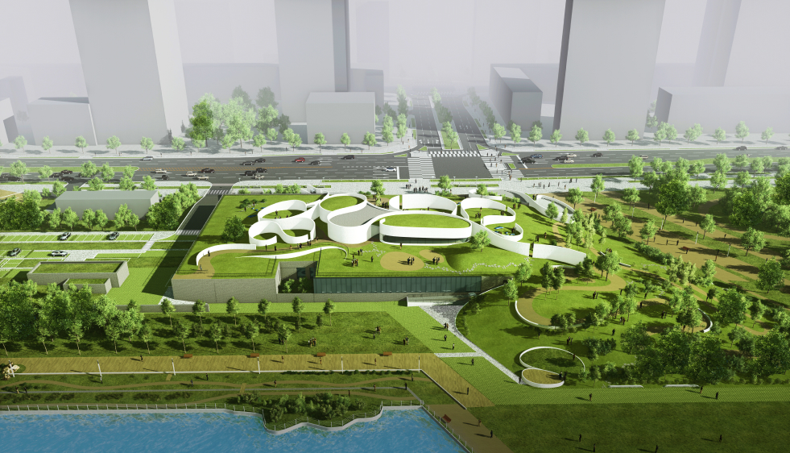
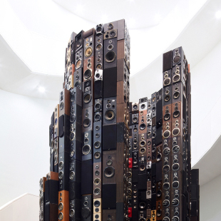
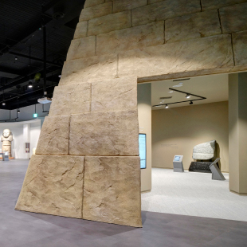
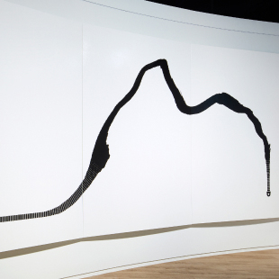
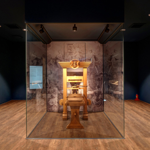

| 건축물 소개
문자와 문명의 위대한 여정 국립세계문자박물관을 소개합니다.
‘페이지스(Pages)’는 지난 2017년에 국제현상설계공모에서 126:1의 경쟁률을 뚫고 당선된 삼우건축의 작품입니다. 국립세계문자박물관은 송도 센트럴파크에 있는 만큼 독립된 건축 형태보다는 기존 공원과 어우러질 수 있는 수평적이고 유려한 곡선 형태의 열린 공간으로 디자인되었습니다. 산책로와 자연스럽게 이어지며 내연과 외연이 서로 교차하고 중첩되며 반전되는 연속적인 모습(시퀀스)을 제공합니다.
문자와 문명의 위대한 여정 국립세계문자박물관을 소개합니다.
국립세계문자박물관의 건축물 ‘페이지스(Pages)’는 문자가 쓰이는 바탕을 의미하는 건축적 장치입니다.
페이지 월(Page Wall)이라는 건축적 바탕을 활용해 우리는 문자에 대한 이야기를 담고자 합니다.
| 야외전시 안내
빛으로 새긴 감각
타원형으로 배치된 패널들의 움직임은 태양과 조명의 방향에 따라 다양한 빛의 조각을 만든다. (빛 감각, 그림자 교감, 카운터밸런스)
물로 새긴 감각
원형의 수반에 사선으로 드리운 물길을 통해 떨어지는 물 입자의 크기와 속도, 수반에 부딪치는 물의 파장이 다양한 감각을 자극한다. (물 감각, 물 파동, 물소리)
국립세계문자박물관에 오신 것을 진심으로 환영합니다.
| 상설전시 안내
상설전시는 세계 문자와 문자문화 그리고 문명을 비교 문화의 시각에서 조명합니다. 이야기 중심의 전시품을 통해 문자의 발생에서부터 발전과 그 확산 과정을 살펴보고, 다양한 분야 작가들과의 협업을 통해 문자 콘텐츠를 재해석하였습니다.
-

◉ 위대한 발명
A Great Invention문자 이전의 소리,동굴벽화,암각화 등
-

◉ 위대한 발명
A Great Invention쐐기문자, 이집트문자, 마야문자, 라틴문자, 아람문자, 인도・동남아문자, 한자, 한글, 훈맹정음
-

◉ 문자, 문화를 만들다
Writing Systems to Create Culture인쇄술, 번역, 기록, 매체, 서체
-

◉ 위대한 발명
A Great Invention문자의 미래